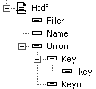
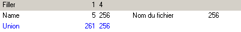
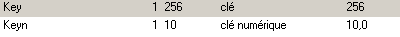
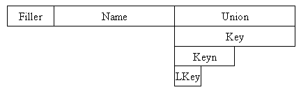

L'union permet de définir la même zone d'une table de plusieurs manières différentes.
Plus précisément, l'union est un champ spécial dont tous les sous-champs sont implantés à partir du même emplacement.
Le champ Union n'existe que dans le dictionnaire ; il n'apparaît pas dans les masques ou dans les programmes Diva.
Création d'une Union
Pour créer une Union dans une table,
vous devez tout d'abord insérer un champ Union (clic droit puis Creer Union)
puis insérez les sous-champs de l'union. Tous ces sous champs redéfinissent le même espace.
Exemple
Soit la table suivante :

Les champs visibles au premier niveau sont :

Les sous-champs de l'union sont :

En mémoire la table est implantée de la manière suivante :

En Diva, on écrira :
- htdf.Name
- htdf.Key
- htdf.Keyn
- htdf.LKey
mais htdf.Filler et htdf.Union n'existent pas.